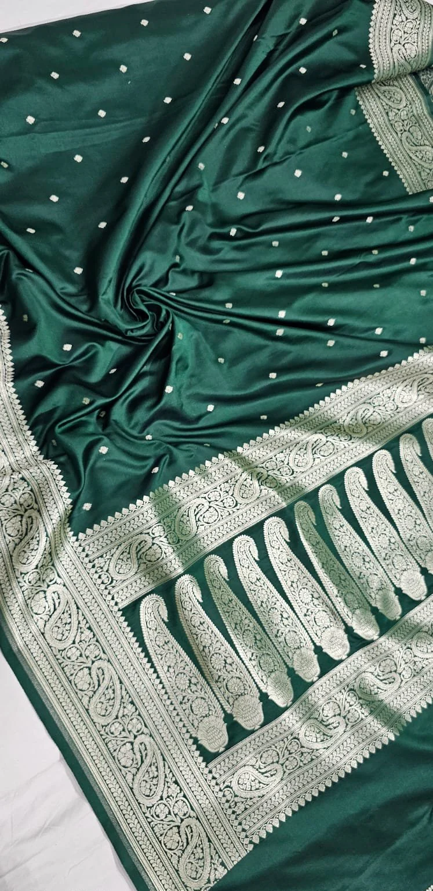
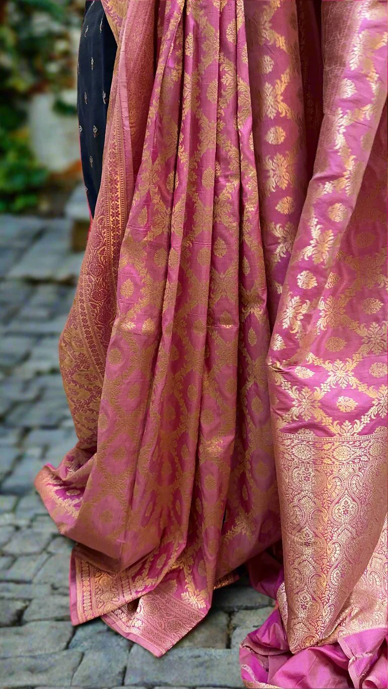

📖 Origin & Evolution
The Banarasi Silk Saree, one of India’s finest textiles, originates from Varanasi (Banaras), Uttar Pradesh. Its weaving tradition dates back to the Mughal era, blending Persian artistry with Indian craftsmanship. Known for its rich brocades, zari (gold and silver threads), and intricate motifs, the Banarasi saree has long been associated with royalty and weddings.
💡 Did You Know?
🌟 It can take anywhere from 15 days to 6 months to weave a single Banarasi saree, depending on the complexity.
👑 Mughal emperors greatly influenced its motifs, introducing floral and foliage patterns.
💰 Traditionally, pure Banarasi sarees were woven with real gold and silver threads.
🏛️ Banarasi Saree received the GI (Geographical Indication) tag in 2009 to protect its authenticity.
👑 Famous Banarasi Styles
Katan – Pure silk sarees with luxurious finish.
Shattir – Modern, lightweight variant with unique designs.
Organza with Zari – Sheer silk fabric with intricate zari patterns.
Georgette Banarasi – Light and flowy with delicate weaving.
🎯 Quick Quiz:
The motifs of Banarasi sarees were largely influenced by which era?